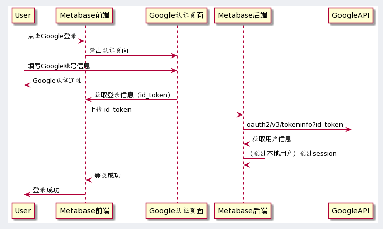
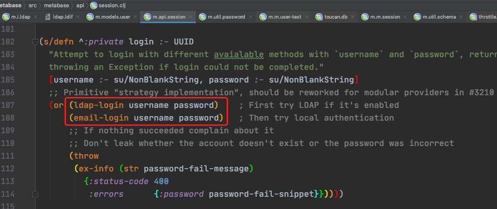

探讨如何将 Metabase 融入业务系统（SaaS 服务）。
为何需要集成 Metabase 到业务系统中呢？一般，通用的数据需求都做到SaaS服务中了。而现实情况是，客户是有很多定制化数据需求的。使用 Metabase 制作报表，直接跳过前后端开发，快速满足客户需求。
（最终极地，进一步提高生产效率，把 Metabase 的组件化能力内化到 SaaS 服务中才是正道。）
试分析下 Metabase 提供的方案，以及适配我们的场景，分析该怎么改。
分析现存方案
开源版本的 Metabase 支持两种第三方登录：
- LDAP: Allows users within your LDAP directory to log in to Metabase with their LDAP credentials, and allows automatic mapping of LDAP groups to Metabase groups.
- Sign in with Google: Allows users with existing Metabase accounts to login with a Google account that matches their email address in addition to their Metabase username and password.
企业版本：
- SAML
- JWT
参考：
- Authenticating with Google Sign-In or LDAP https://www.metabase.com/docs/latest/administration-guide/10-single-sign-on.html
- Authenticating with SAML https://www.metabase.com/docs/latest/enterprise-guide/authenticating-with-saml.html
- JWT-based Authentication https://www.metabase.com/docs/latest/enterprise-guide/authenticating-with-jwt.html
Sign in with Google
其底层对接的是Google的Sign-In for Website https://developers.google.com/identity/sign-in/web 。并假设 Google 返回的数据是完全可信的。
根据文档配置获取 clientID。本地测试，Authorized JavaScript origins 设置成本地路径。
管理员角色下 Metabase 配置 clientID。第二项，满足条件：email是@gmail.com结尾的，自动创建账户。
不然，需先创建Metabase账户，其email等于Google登录返回的邮箱地址。
Google登录的client-id由后端提供给前端。
用户登录界面有了Google登录按钮。
点击Google登录按钮，会唤起Google登录页面。登录成功，获取到Google返回结果。
将Google返回里的token提交给Metabase服务器。
google_auth这个接口。
通过token请求用户信息。参考：Calling the tokeninfo endpoint https://developers.google.com/identity/sign-in/web/backend-auth#calling-the-tokeninfo-endpoint
整体流程如图：

LDAP
LDAP 可以理解为一个用户数据库、服务，常见用途就是单点登录，用户只需要记住一个密码就可以登录多个服务。了解更多参考：
- 轻型目录访问协议 https://zh.wikipedia.org/wiki/%E8%BD%BB%E5%9E%8B%E7%9B%AE%E5%BD%95%E8%AE%BF%E9%97%AE%E5%8D%8F%E8%AE%AE
- What are CN, OU, DC in an LDAP search? https://stackoverflow.com/questions/18756688/what-are-cn-ou-dc-in-an-ldap-search
参考文档搭建一个LDAP环境。
- How to install OpenLDAP on Ubuntu 18.04 https://www.techrepublic.com/article/how-to-install-openldap-on-ubuntu-18-04/
其中：
- DNS domain name 使用 metabase.com，我们会使用metabase的测试配置。
- 测试配置使用 https://github.com/metabase/metabase/blob/master/test_resources/ldap.ldif
ldapadd -x -D cn=admin,dc=metabase,dc=com -W -f test_resources/ldap.ldif
用一个LDAP可视化管理工具（用的 Apache Directory Studio）可以看到这样的树状结构。
Metabase 管理界面配置如下：
LDAP用户还是使用邮箱密码登录。优先使用LDAP登录。

LDAP用户、密码验证。
验证通过，LDAP用户会映射为本地用户，但是不存密码。并同步group信息（LDAP group 与 metabase group 之间映射可配置）。
LDAP 用户信息的字段映射到本地用户的email/first_name/last_name，可以配置。
SAML
SAML是实现单点登录（SSO）的一种开放标准。仍然是服务方引导用户到认证中心认证，认证成功后，服务方从认证中心获取用户信息的逻辑。整体逻辑与Google Signin没两样。
There three main roles in this communication:
- End User
- Identity Provider (IdP)
- Service Provider (SP)
The end-user initiates the login process at the SP. The SP will redirect the user to the IdP with a SAML Request (AuthnRequest). The SAML Request will contain the necessary information for the IdP to authenticate the end-user and reply to the SP with the correct SAML Assertion (SAMLResponse).

GitHub找了个例子，了解下SAML的流程，可以有一个更具象的认识。 https://github.com/crewjam/saml
- SP 需要知道 IDP 的认证地址。需要知道 SAML Request 往哪发。
- IDP 需要知道 SP 的接收地址，需要知道 SAML Response 往哪发。
- IDP 与 SP之间是通过公私钥认证的。
参考：
- Security Assertion Markup Language https://en.wikipedia.org/wiki/Security_Assertion_Markup_Language
- An Introduction to SAML (Security Assertion Markup Language) https://www.secureauth.com/blog/introduction-to-saml
- SAML library for go https://github.com/crewjam/saml
适配 SaaS 服务
企业内部使用，使用LDAP挺方便的。而 SaaS 服务怎么利用上Metabase呢？而且Metabase本身没有多租户（企业）的概念。
大概分析如下：
基于分组的数据隔离
SaaS 系统，多租户系统，最基本的要求是保证数据隔离。客户只能看到自己的数据（报表）。
Metabase 数据隔离的手段只有分组。基于分组隔离客户，一个客户一个分组。因为少部分客户才会用到 Metabase 功能，所以分组不会非常多。
报表功能复用？
这个有点难。只能一个个客户（对应每个分组）做报表。通用的功能，copy -> SQL里修改客户隔离标识 -> paste。
定制 SSO 系统
认证页、获取用户信息，每个SSO系统都是有的。这里需要考虑的是用户字段与Metabase的映射。
- Metabase中用户信息有：
email/first name/last name。SSO系统需要有对应的字段。 - 不是每个SaaS客户都能使用Metabase。SSO用户信息加入用户标识
metabase_enabled。没有标识，禁止进入 Metabase，Metabase 进行提示。 - 用户信息中有客户隔离标识
mid。对应 Metabase 分组。
Metabase
前端，Auth Provider 配置页：
- 配置SSO认证页地址。（不能写死，生产、测试环境地址不同）
- 配置SSO Token API地址。
- 客户隔离标识与Metabase group映射。
前端，登录页：
- 提供一个点击登录按钮。跳转到SSO认证页面。
后端：
- 对接 SSO 用户接口。
Last modified on 2020-06-09